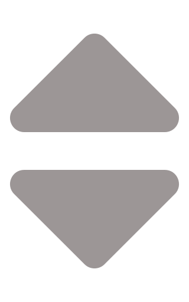

<div class="finder">
  <div class="finder__block">
    
    
  </div>

  <div class="finder__mainBlock">
    <input class="finder__find" maxlength="256" type="text" [(ngModel)]="search">

    
  </div>

</div>
